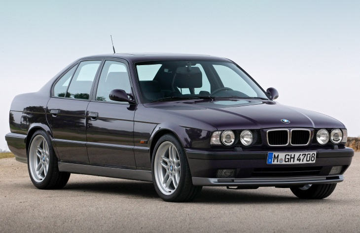

BMW M5 • 1 поколение (E28) • 1985–1987
В 1988 году стартовало производство новых «эм-пятых».
Первоначально на автомобиль устанавливался прежний двигатель, но его мощность была увеличена до 315 «лошадей» (для Америки — 307 л. с.) В 1991 году BMW M5 для европейского рынка получил модернизированный силовой агрегат: рядный шестицилиндровый мотор объемом 3,8 литра развивал 340 л. с, а в 1994 — новую шестиступенчатую «механику». В 1992 года в продаже появился универсал M5 Touring.
Всего выпустили 12245 машин второго поколения, включая 891 универсал • 1985–1987/1.jpg)
 • 1985–1987/2.jpg)
 • 1985–1987/3.jpg)
 • 1985–1987/4.jpg)
 • 1985–1987/5.jpg)
 • 1985–1987/6.jpg)
